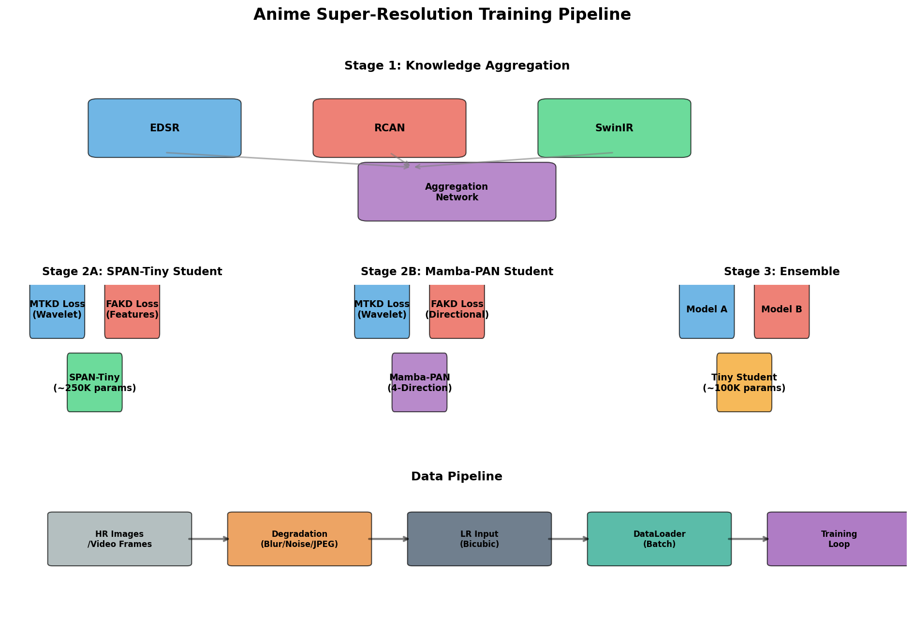

Complete Architecture Documentation & Training Pipeline Guide
This project implements a Progressive Ensemble Distillation system for anime super-resolution. It combines state-of-the-art architectures with advanced knowledge distillation techniques to achieve high-quality upscaling with efficient inference.

Complete training pipeline from data ingestion to final ensemble model
NTIRE-winning architecture optimized for super-resolution with parameter-free attention.
State Space Model with linear complexity and 4-direction scanning mechanism.
Combines Model A and Model B as frozen teachers for ultra-lightweight student.
Train a network to fuse outputs from multiple teacher models (EDSR, RCAN, SwinIR).
Train SPAN-Tiny student with multi-teacher knowledge distillation.
Train Mamba-PAN with direction-aware distillation.
Create ensemble from frozen models and distill to tiny student.
| Loss | Type | Purpose | Weight |
|---|---|---|---|
| L1/L2 | Pixel | Direct reconstruction quality | 1.0 |
| MTKD | Distillation | Wavelet-based teacher knowledge | 1.0 |
| FAKD | Distillation | Feature affinity matching | 0.5 |
| Perceptual (VGG) | Perceptual | High-level feature similarity | 0.1 |
| Adversarial | GAN | Realistic texture generation | 0.1 |
| Consistency | Regularization | Cross-direction stability (Mamba) | 0.1 |
Training uses realistic degradation to simulate real-world low-quality inputs:
Supports training from video sources with automatic frame extraction:
| Mode | Description | VRAM | Time |
|---|---|---|---|
| model_a | Train SPAN with MTKD+FAKD | ~6.5 GB | 8-12 hours |
| model_b | Train Mamba-PAN | ~7.2 GB | 12-18 hours |
| both_parallel | Alternate batches between models | ~8.0 GB | 15-20 hours |
| both_sequential | Train A then B | ~7.0 GB | 20-30 hours |
| ensemble | Train from frozen A+B | ~6.0 GB | 2-4 hours |
| full | Complete pipeline (A → B → Ensemble) | ~8.0 GB | 30-50 hours |